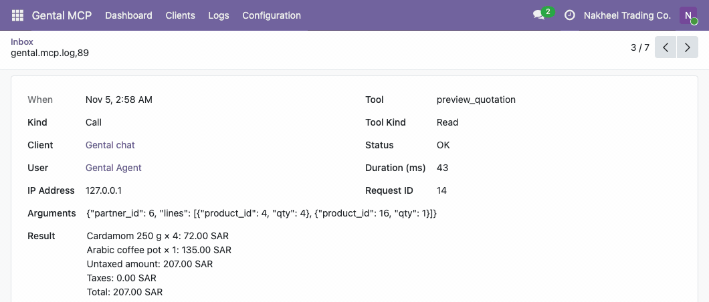
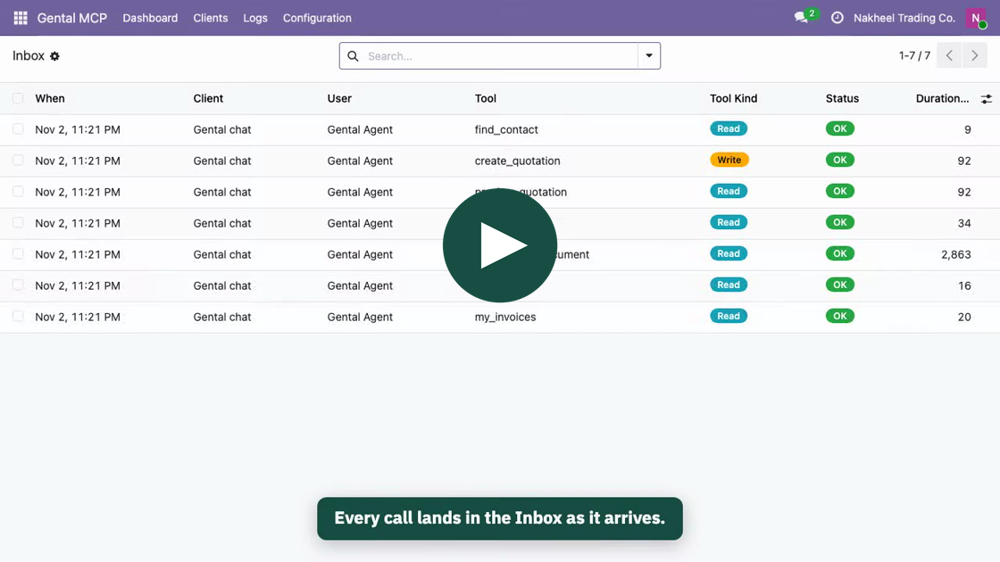
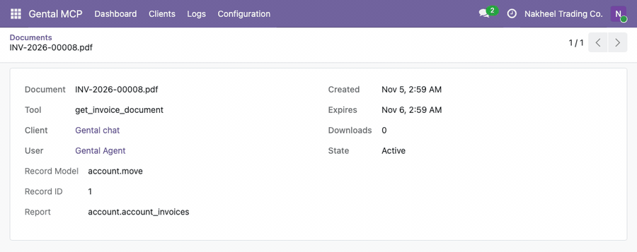
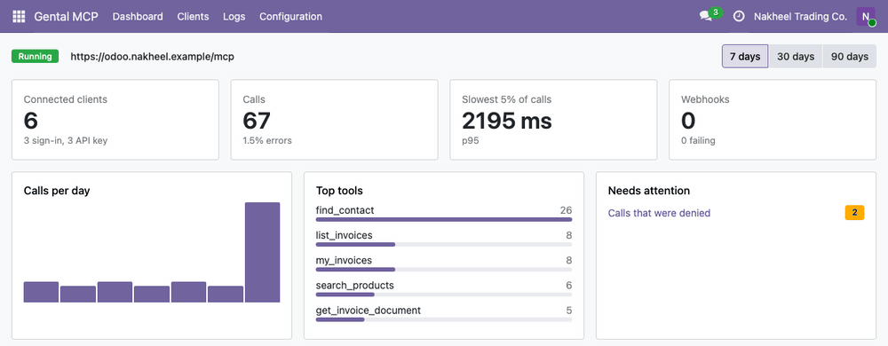
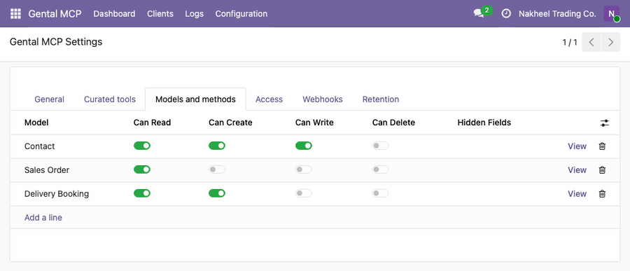
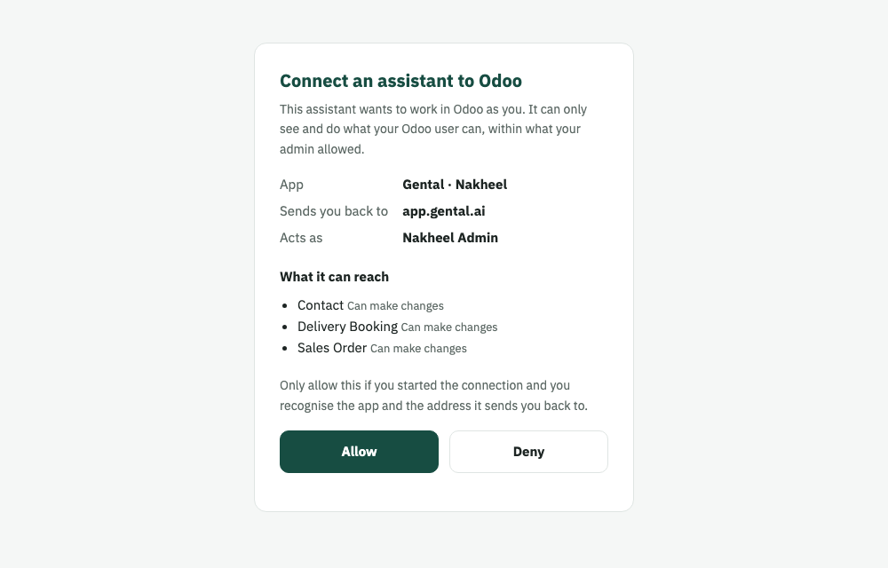

A free module that turns your own Odoo into a secure MCP server. Claude, ChatGPT, Gental and any MCP client work in it as an Odoo user you choose, and every call lands in your Inbox.

Above: the Inbox while a chat on Gental makes real calls, then one entry opened. What the assistant sent, and what Odoo answered.
Free, LGPL-3. Community and Enterprise, on your server or Odoo.sh. Not Odoo Online.
Seventy seconds in a real Odoo: install, switch it on, choose what the assistant may touch, then watch the calls and the invoice PDFs arrive.

When an assistant asks for an invoice, Odoo renders the PDF as the acting user, files it under Outbox › Documents and hands back a signed link that expires, after 24 hours by default.
“Can you send me the invoice for Khalid?”
tools/call
{
"name": "get_invoice_document",
"arguments": {"invoice_id": 1}
}The request the assistant sends: one tool and the invoice's id. Who may see that invoice is still Odoo's decision.

The Outbox as that call arrives: the file, the client that asked, when its link expires and how often it was opened.
The assistant turns a request into one of the module's tools, and Odoo does the work as the user it signed in as. Eight real asks, and the tool each one becomes:
customer_balancepreview_quotationOdoo prices each line with Khalid's price list and taxes (207.00 SAR in the Inbox above) and writes nothing yet. The quotation it creates next must match this preview, and no tool takes a price from the assistant.
stock_availabilitydelivery_statussend_invoiceupdate_leadschedule_activitypos_sales_summaryCurated tools appear only when their Odoo app is installed and you turn that area on. Prices always come from Odoo.
Staff tools read or change any customer's data, so keep them on internal agents. Tools for a verified customer act only for the customer a signed identity proves, with Gental.

The Dashboard counting while calls arrive, with the tools agents really use.
| Tool | What it does |
|---|---|
| Contacts | |
find_contactRead · staff | Find a contact by name, phone, email or reference |
upsert_contactWrite | Create or update a contact by phone or email, without duplicates |
log_noteWrite · staff | Add a note to a contact, lead or order |
schedule_activityWrite · staff | Schedule a call or to-do for a colleague, with a deadline |
| Sales | |
search_productsRead | Find products with their price, and stock when Inventory is installed |
preview_quotationRead | Price lines for a customer, with taxes and total, before anything is written |
create_quotationWrite | Create the quotation, re-priced by Odoo and matched to its preview |
confirm_orderWrite · staff | Confirm a draft quotation |
cancel_orderDestructive · staff | Cancel an order |
order_statusRead · staff | Status of an order by its reference |
my_ordersRead · verified customer | The customer's own orders |
get_order_documentRead · staff | Quotation or order PDF as a signed link |
my_order_documentRead · verified customer | The customer's own quotation or order PDF |
| Invoicing | |
list_invoicesRead · staff | List invoices by customer, state, dates or overdue |
invoice_detailsRead · staff | Lines, amount paid and open, due date |
customer_balanceRead · staff | Receivable and overdue totals for a customer |
my_invoicesRead · verified customer | The customer's own invoices |
my_balanceRead · verified customer | The customer's own balance |
get_invoice_documentRead · staff | Invoice PDF as a signed link |
my_invoice_documentRead · verified customer | The customer's own invoice PDF |
send_invoiceWrite · staff | Email the invoice to the customer through Odoo |
| CRM | |
create_leadWrite | Create a lead |
update_leadWrite · staff | Change a lead's stage, owner, expected revenue or tags |
pipeline_summaryRead · staff | The pipeline per stage and per salesperson |
| Inventory | |
stock_availabilityRead | Stock per product and warehouse, with the forecast |
delivery_statusRead · staff | Deliveries of an order: state and tracking reference |
my_deliveriesRead · verified customer | The customer's own deliveries |
get_delivery_documentRead · staff | Delivery slip PDF as a signed link |
| Point of Sale | |
pos_sales_summaryRead · staff | Sales for today, a session or a date range, per shop |
find_pos_orderRead · staff | Find a sale by its receipt number |
| Any model, your custom apps included | |
odoo_search odoo_read odoo_describe_modelRead | Search, read and describe the models you expose. Passwords, tokens, secret-like and binary fields are never returned. |
odoo_create odoo_update odoo_deleteWrite · destructive | Each allowed separately per model, with hidden fields and an extra filter on top of the record rules |
odoo_call_methodAs you mark it | Run a public method you allowed, marked read, write or destructive |
Three walls and a set of limits. A call stopped anywhere gets an error, not data, and the Inbox keeps a line for it.
Read, create, update and delete are allowed separately. All of it is off until you switch it on.
Every call runs as the signed-in user: their access rights and record rules apply.
Business data is never read as the superuser.
OAuth with PKCE, Odoo's two-factor included, then a consent page.
Only members of Gental MCP: Connect sign in. Remove a user and their tokens stop at once.
Keys and tokens are stored only as hashes.
Rotates on use; a reused one revokes the whole chain.
Per client by default; you can change it.
Every call, denial, sign-in and token change is a line in the Inbox.

Exposing a custom model: choose it, choose what the assistant may do, save.

The consent page a client's sign-in ends on: the app, where it sends you back, and who it acts as.
A Gental MCP menu appears for administrators.
An https address under Configuration › General, then the check that assistants can reach it. Behind a reverse proxy, turn on Odoo's proxy mode.
Turn on tool areas and models, and create an agent user in the Connect group with only the rights it needs.
Give it https://your-odoo/mcp, sign in as the agent user and approve. Scripts without OAuth use an API key.
No. Odoo Online doesn't allow custom modules. It works on Odoo Community and Enterprise on your own server, and on Odoo.sh.
Claude, ChatGPT and any client that speaks MCP over HTTP: add the MCP address as a custom connector and sign in with an Odoo login. Scripts and tools without OAuth use an API key.
With Gental, an agent can also know which customer it is talking to through a verified identity and show them only their own orders, invoices and deliveries; show a priced preview and wait for a yes before it creates a quotation; never create the same record twice when a message is retried; and send quotation, invoice and delivery PDFs on WhatsApp as a link.
Assistants reach Odoo over the internet, so it needs a public https address, for example through a reverse proxy. Odoo with several databases needs one database per host name.
It stays in your Odoo. The module runs inside your database, and a client sees only what you expose, within the rights of the user it acts as.
Yes, with outbound webhooks to any https address: invoice posted or paid, order created, confirmed or cancelled, delivery done, lead created or moved, contact created, and record created or updated on any exposed model. Each delivery is signed with your secret and retried with backoff, up to eight attempts.
Nothing. The module is free and open source under LGPL-3.
Yes. Its screens and messages ship in Arabic and English, and the consent page follows the user's language.
Write to hello@gental.ai. We read every message.
Runs on
Odoo Community and Enterprise, on your server or Odoo.sh. Not Odoo Online.
Licence
Free and open source, LGPL-3.
Languages
Screens and messages in English and Arabic.
Made by
ignteQ, the team behind Gental.
Gental MCP is made by ignteQ and is not made or endorsed by Odoo S.A.